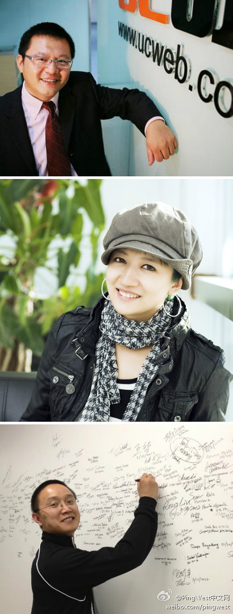

把中国IT人才卖到美国去，把美国IT牛人卖给中国公司，中美IT人才俱乐部是干这些事儿吧？//@蒋涛CSDN: //@PingWest中文网:最后一轮报名征集。@品玩:【“中美IT人才俱乐部”第一期活动】1月31日，中关村IT专业人士协会（ZITPA）、CSDN旗下招聘网站@庞果网 和@PingWest中文网 联合发起的中美IT人才俱乐部举办第一期活动，邀请@俞永福 @Papaya沈思 与@星河明远 分享跨硅谷与中国的市场开拓、创业与职业发展经历心得。详情及报名请戳网页链接 
俺在收集#社区案例#//@ZoomQuiet: 证据链以及事件:《Python 核心编程》应属于社区翻译 - Nicholas_Ding - 网页链接 主要是被经验丰富的刘老师利用了Ubuntu社区之前也遭受过..嗯!另外那个刘吉广 @OpenBookProject //@刘鑫-MarsLiu: 大家都太年轻了，还不懂怎么集合起一群人做好一件事。@asmcos智普教育:水木上看到的： 网页链接图书事件 - 在一次聚会上，某个会员提出由社区集体翻译 《Python 核心编程》 - 社区群策群力，完成了翻译 - 这时，该会员完全从社区中消失了 - 不久，《Python 核心编程 中文版》 被该会员以个人名义出版了, @limodou @刘鑫-MarsLiu
多谢//@乐问软件_郭化勇:需要感应器+无线模块+后台状态管理，估计还得预定系统做配套，否则没法实用。就硬件成本估计就是无线模块要几十元一个，感应器几十元一个（感应厕位是否关闭），写一个小单片机程序传输状态给后台服务器，再写一个WEB预约系统，搞定！@Ada李力:大厦的洗手间经常要排队，每个厕位门上安个传感器，然后加个芯片做处理，每个厕位状态实时发布在网上。这个DIY下，估计要花多少时间，多少钱？有懂行的吗？
回复@賀寧:又一方案 //@賀寧:一般大厦带自动冲水的本身就有传感器，信号接出来汇总到一个无线模块(范围3km），一般无线模块的接收端使用485接口（USB较贵）直接插在服务器上，写程序读状态，往DB里塞数据。web App读DB发布状态。预订我看意义不大最多知道个大概哪儿人多哪儿人少逻辑跟路况一样。无线模@Ada李力:大厦的洗手间经常要排队，每个厕位门上安个传感器，然后加个芯片做处理，每个厕位状态实时发布在网上。这个DIY下，估计要花多少时间，多少钱？有懂行的吗？